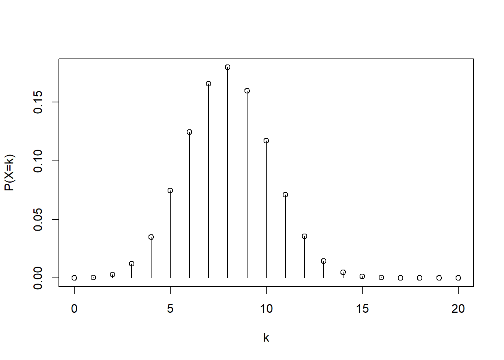

These labs are designed to reinforce probability theory by using simulation and computational verification in R.
Why simulation helps in probability:
Many probabilities are defined as long-run frequencies (e.g., the chance of heads is the limiting proportion of heads in repeated coin flips).
Simulation lets us approximate theoretical probabilities and see concepts like the Law of Large Numbers and Central Limit Theorem in action.
Simulation is also a practical tool when exact calculations are difficult.
Throughout, we will use:
Random sampling (sample(), rbinom(), etc.)
Indicators like (event) which evaluate to TRUE/FALSE, and means of indicators to estimate probabilities
Repetition (replicate()) to generate many trials
Visualization (plot(), hist()) to connect distributions to data
Lab 1 — R Basics + Simulation + Law of Large Numbers
Objectives
Learn R basics: vectors, arithmetic, logical comparisons, and summaries
Estimate probabilities through simulation
See the Law of Large Numbers (LLN): the sample proportion approaches the true probability as sample size grows
Concepts
Probability as a long-run frequency
If we repeat an experiment many times, the proportion of times an event occurs tends to stabilize around the true probability. In simulation, we approximate a probability by:
\[P(A) \approx \frac{{\text{trials where }A\text{ happens}}}{\text{number of trials}}.\]
Indicator variables
If we define an indicator (I_A) that equals 1 when event (A) occurs and 0 otherwise, then:
The average of (I_A) across many trials estimates (P(A)).
In R, (condition) produces TRUE/FALSE, and mean(TRUE/FALSE) treats TRUE as 1 and FALSE as 0.
A short description (2–4 sentences) of what you see in the LLN running plot
Estimated expected score and (\(P(\text{score} \ge 12)\))
Compare the simulated mean to the theoretical mean 7.5
Lab 2 — Counting + Sampling Without Replacement
Objectives
Model draws without replacement
Estimate conditional probabilities from sequential experiments
Connect to hypergeometric reasoning and conditional probability rules
Concepts
Sampling without replacement
When items are not replaced, outcomes are dependent. For example, after drawing a sour milk, there are fewer sour milks remaining.
Conditional probability
\[P(A \mid B) = \frac{P(A \cap B)}{P(B)}.\] In simulation, we estimate (\(P(A \mid B)\)) by restricting to the trials where (B) happened: \[P(A \mid B) \approx \frac{{\text{trials where }A\text{ and }B}}{{\text{trials where }B}}.\]
k <-0:20pmf <-dbinom(k, 20, 0.4)plot(k, pmf, type="h", xlab="k", ylab="P(X=k)")points(k, pmf)

Deliverables
Three probabilities (analytic + simulation)
One paragraph explaining what a CDF is in words
Lab 4 — Geometric & Poisson + Approximations
Objectives
Understand waiting times (geometric)
Understand counts over intervals (Poisson)
Compare analytic results to simulation
Concepts
Geometric distribution (waiting time)
If each trial succeeds with probability (p), and (T) is the number of trials until first success, then: \[E[T] = \frac{1}{p}.\]R note:rgeom() returns the number of failures before first success, so we add 1 to get trials-until-success.
Poisson distribution (counts)
If events happen randomly at average rate (\(\lambda\)) in an interval, then (\(Y \sim \text{Poisson}(\lambda)\)). In R:
Let (\(Y \sim \text{Poisson}(\lambda=3)\)). Compute and simulate:
(\(P(Y=0)\))
(\(P(Y \ge 5)\))
dpois(0, lambda=3)
[1] 0.04978707
1-ppois(4, lambda=3)
[1] 0.1847368
set.seed(31)Y <-rpois(50000, lambda=3)mean(Y ==0)
[1] 0.04894
mean(Y >=5)
[1] 0.1853
Deliverables
Simulated vs theoretical (E[T])
Two Poisson probabilities (analytic + simulation)
Lab 5 — Continuous Random Variables + Normal + Central Limit Theorem
Objectives
Use pnorm, rnorm, runif
Compute Normal probabilities
See the Central Limit Theorem (CLT) using sample means
Concepts
Normal distribution and tail probabilities
For a standard normal (\(Z \sim N(0,1)\)):
pnorm(a) computes (\(P(Z \le a)\))
tail probabilities use 1 - pnorm(a)
CLT (informal)
For many i.i.d. random variables with mean (\(\mu\)) and standard deviation (\(\sigma\)), the sample mean (\(\bar X\)) becomes approximately Normal for large (n): \[\bar X \approx N\left(\mu,\ \frac{\sigma}{\sqrt{n}}\right).\]
Part A — Normal probabilities
pnorm(1.25) # P(Z<1.25)
[1] 0.8943502
2*(1-pnorm(2)) # P(|Z|>2)
[1] 0.04550026
Part B — CLT with dice (distribution of sample means)
Understand sampling variability for an estimator (like the mean)
Use the bootstrap to build a confidence interval
Concepts
Sampling variability
Even if the population is fixed, different samples produce different sample means.
Bootstrap idea
We approximate the sampling distribution of an estimator by:
Taking your observed sample
Resampling it with replacement many times (bootstrap samples)
Recomputing the estimator (mean) each time
A percentile bootstrap CI uses quantiles of bootstrap estimates.
Part A — Create a population and take a sample
We use an exponential distribution as a “population” because it is skewed (helpful for seeing why Normal approximations sometimes struggle with small samples).
set.seed(50)pop <-rexp(200000, rate=1) # true mean is 1sample1 <-sample(pop, size=50, replace=FALSE)mean(sample1)